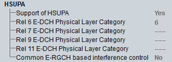

HSUPA UE Capabilities
This section provides HSUPA-related UE capabilities.

HSUPA UE capabilities
- Support of HSUPA:
Indicates whether the UE supports HSUPA - "Rel 6 / Rel 7 / Rel 9 / Rel 11 E-DCH Physical Layer Category":
E-DCH physical layer category of the UE for R6 (HSUPA), R7 (HSUPA: QPSK and 16QAM), R9 (DC-HSUPA: QPSK and 16QAM), and R11 (2x2/4x4 MIMO) connections - "Common E-RGCH-Based Interface Control":
Indicates whether the UE supports common E-RGCH-based interference control in CELL_FACH state